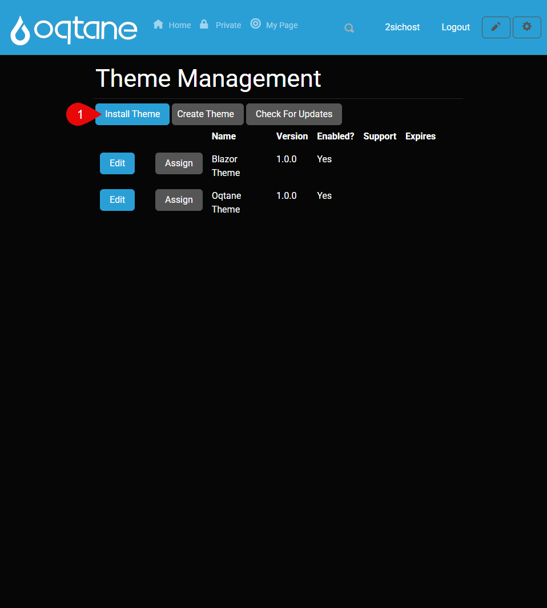
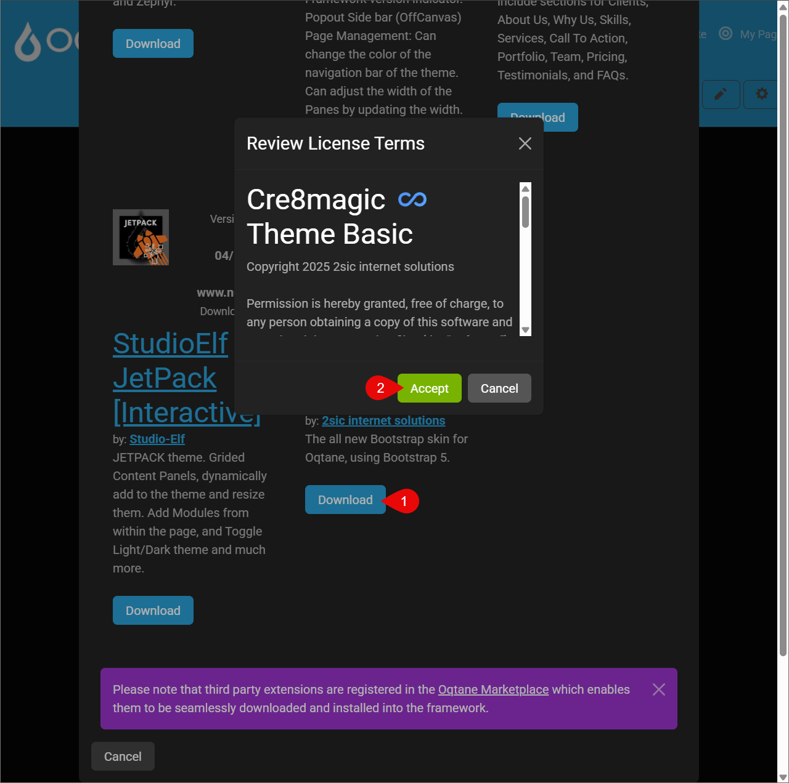
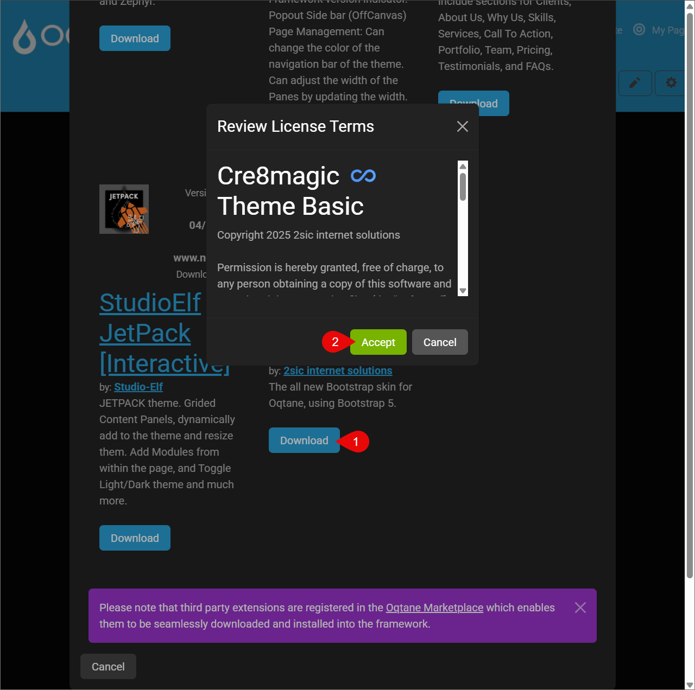
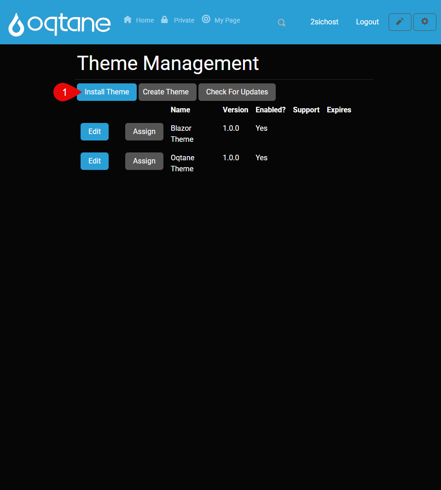
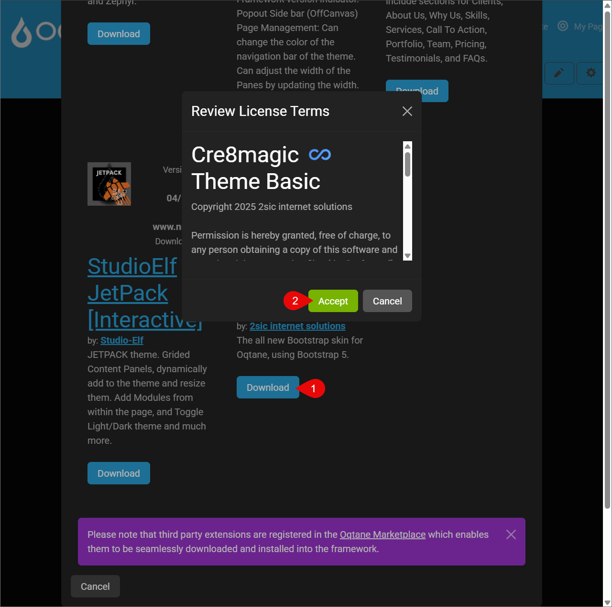
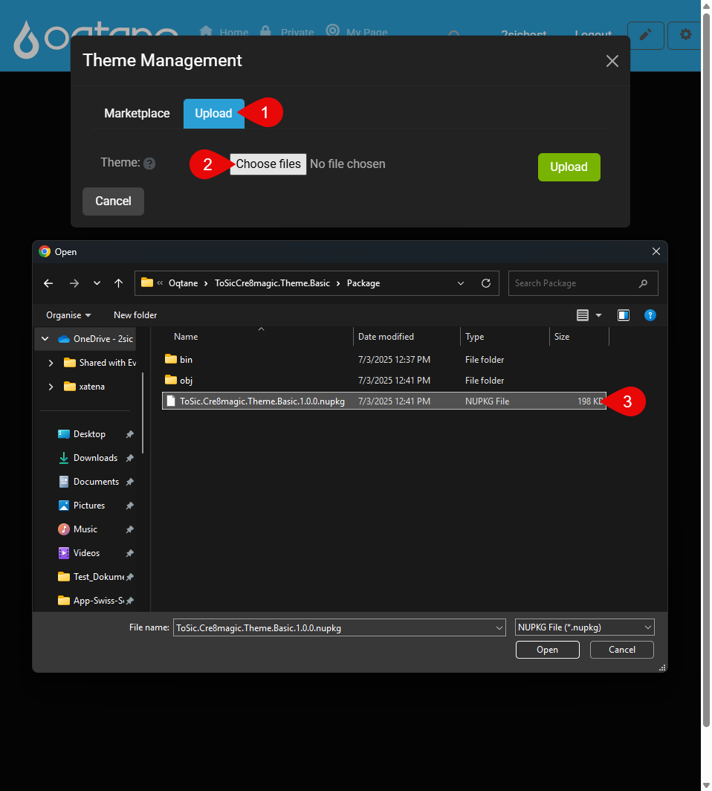
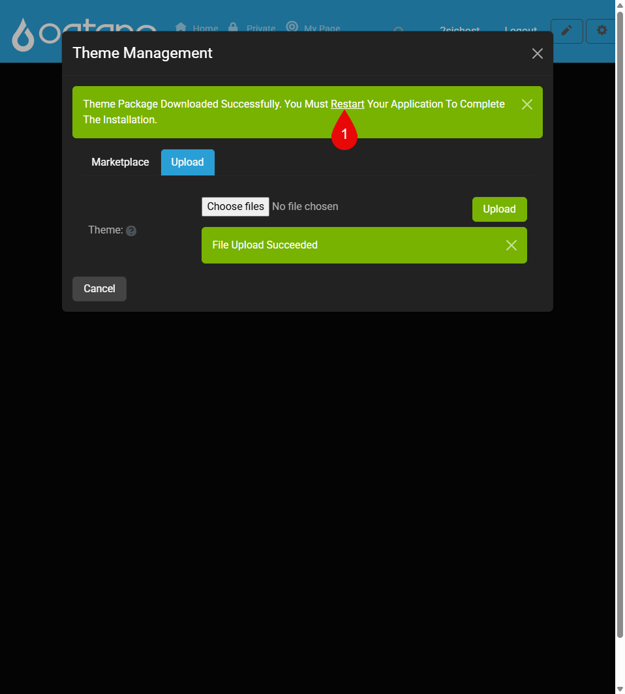

Install Theme Guide
This guide will walk you through the two different methods of installing a custom theme in Oqtane: via the official Marketplace or by uploading a NuGet package manually. Both options are suitable depending on whether the theme is published online or developed locally.
Tip
Make sure your theme is built and packaged correctly before installation. You will need a .nupkg file to upload it manually or a published release to use the marketplace..
Install from Marketplace
Open the Admin Dashboard
Go to Theme Management"> Click Install Theme"> Download and Accept the theme">
Download Successfully, Restart the Application to activate the theme">
Download and Accept the theme">
Download Successfully, Restart the Application to activate the theme">

Go to Theme Management"> Click Install Theme">
Download and Accept the theme">
Download Successfully, Restart the Application to activate the theme">
To install a theme from the Oqtane Marketplace:
- Open your Admin Dashboard and Go to Theme Management
- Click Install Theme
- Switch to the Marketplace tab
- Click Download next to the desired theme and Accept
- Finally, click Restart Application to activate it
Note:
- On a local environment, you can restart directly from Visual Studio.
- On a server, go to System Info > Restart Application.
Don’t have a .nupkg file yet?
Learn how to build one in How to Build a NuGet Theme
Install from NuGet Package
Open Theme Management">
Upload your .nupkg file">
To manually install a theme using a .nupkg file:
Don’t have a .nupkg file yet?
Learn how to build one in How to Build a NuGet Theme
- Go to Admin Dashboard → Theme Management
- Click Install Theme and switch to the Upload tab
- Select your
.nupkgfile and upload it - After upload, click Restart Application
Note:
- On a local environment, you can restart directly from Visual Studio.
- On a server, go to System Info > Restart Application.